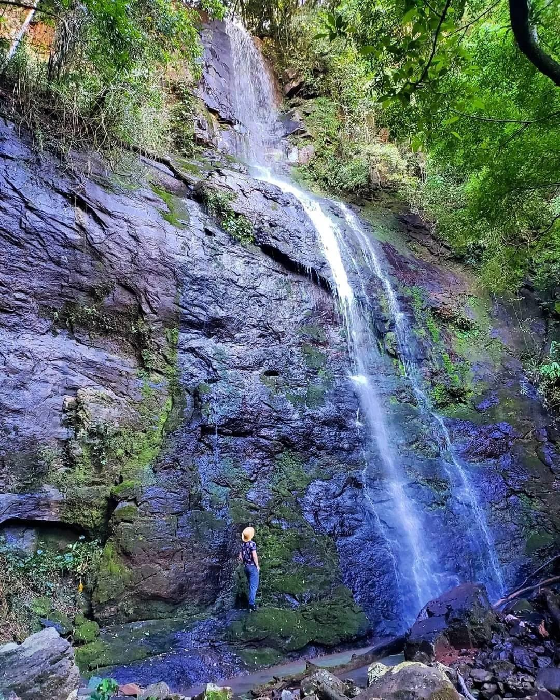

Localizada próxima à Estr. Carapina, a Cascata Padilha Velha se destaca
como um ambiente natural digno de exploração sustentável. Para desfrutar da
cascata, torna-se necessário realizar uma trilha de aproximadamente 25 a 30
minutos em uma deslumbrante região em meio a mata, situada em uma propriedade
privada. Além disso, é possível acessá-la subindo o arroio local por cerca de 50
minutos. Recomenda-se buscar informações adicionais na comunidade local ao
chegar, a fim de garantir uma experiência segura e enriquecedora.
 - fundo verde.png)